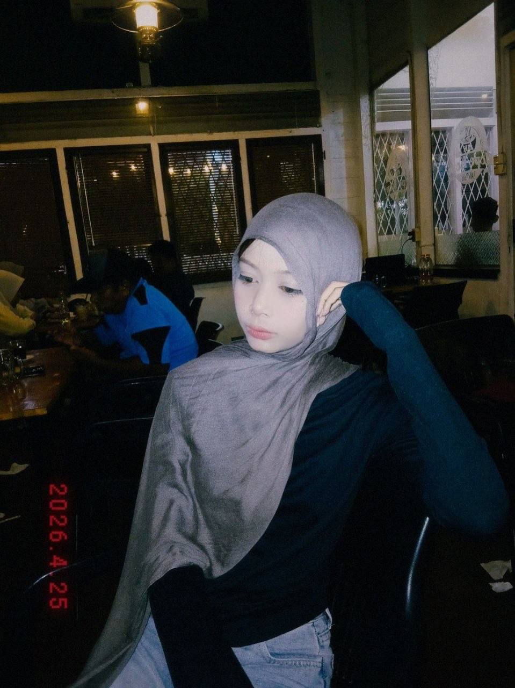

"Creating, Learning, and Growing Every Day ✨"
Informatics Student • Creative Designer • Writer • Volunteer
Contact MeSaya merupakan mahasiswa Teknik Informatika yang memiliki minat pada bidang teknologi, desain kreatif, literasi, dan pengembangan masyarakat. Selain aktif dalam kegiatan akademik, saya juga aktif dalam komunitas literasi, kegiatan sosial, dan organisasi kampus. Pengalaman tersebut membantu saya mengembangkan kemampuan komunikasi, kreativitas, kepemimpinan, serta kerja sama tim. Saya percaya bahwa teknologi dan kreativitas dapat berjalan berdampingan untuk menghasilkan karya yang bermanfaat bagi masyarakat.
Membangun website portofolio pribadi dan website promosi destinasi wisata Indonesia menggunakan HTML dan CSS.
Juara 3 Pekan Seni Mahasiswa Universitas Samudra Tahun 2026 pada kategori karya sastra cerpen.
Membuat desain poster, feed Instagram, dan presentasi menggunakan Canva, CorelDRAW, dan ibisPaint.
Berpartisipasi dalam berbagai kegiatan literasi dan edukasi untuk meningkatkan minat baca masyarakat.
Merancang sistem pakar berbasis web sebagai media pembelajaran dan pengambilan keputusan.
🎨 Art & Creativity
✍️ Creative Writing
💻 Web Development
🎨 Graphic Design
📧 agnesackermanxoxo@email.com
📱 +62 89521337155
📍 Aceh, Indonesia